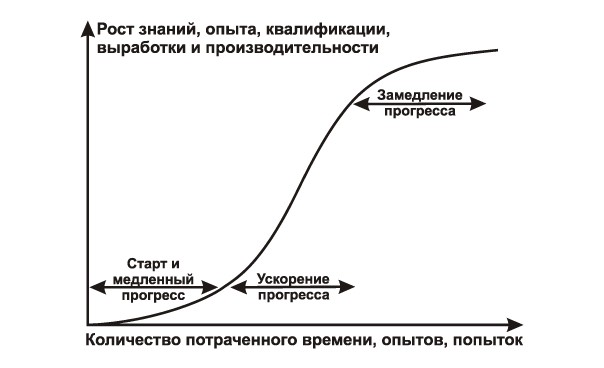
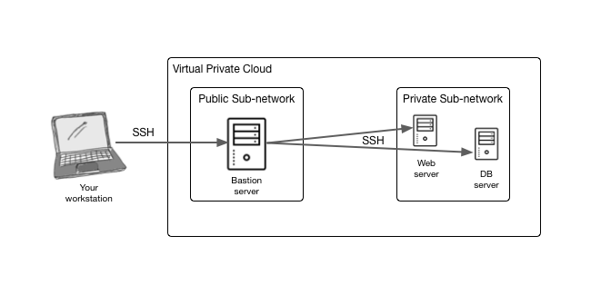

Порой на наших проектах происходят ситуации, когда именно от тебя всё зависит, множество срочных к исправлению проблем. Ты тот единственный человек, который сейчас может помочь, тебе не на кого оставить проблему и других более опытных технических специалистов, которые разбираются в проекте, больше нет. Я называю такие моменты “пожар”. Давай взглянем на эту ситуацию и подумаем, что же мы из неё можем извлечь и почему страх безоснователен.
Почему это произошло?
Для начала разберемся в причинах. Почему на проектах происходят пожары, которые нужно тушить, срочно, именно тебе? Интуитивно кажется, что источник этой проблемы - менеджмент, однако, это далеко не всегда так. Представим, что вас двое-трое разработчиков на проекте и те, другие, собрались в отпуск или в командировку по параллельному проекту. Остался только ты. С точки зрения менеджера - всё в порядке, всегда есть разработчик, который может исправить критическую проблему заказчика. С другой стороны, обычно, если система довольно крупная, то ты знаешь только свою часть и еще немножко, а в тот момент, когда начинают сыпаться ошибки из модуля, которым ты раньше не занимался, то появляется некоторого рода страх, о котором мы немного поговорим.
Безосновательная природа страха
Начинать что-то новое всегда больно, а исправлять чужой код в непокрытой тестами части системы всегда страшно.
Конечно, здесь исходная проблема в отсутствии обильного авто тестирования, однако, если ты работал в аутсорсинге, то ты меня поймешь, нам далеко не всегда дают достаточно времени на покрытие системы тестами, здесь есть тонкая грань между миром разработки и миром бизнеса.
Почему возникает страх? В первую очередь от отсутствия знания того или иного модуля, того или иного кода. Вспомни, когда к тебе прилетал тикет в котором написано, например, следующее: Метод Х модуля А бросает IllegalStateException…. Какие чувства вызывают подобные тикеты, если ты создатель этого метода и вообще обладаешь абсолютно полными знаниями о модуле А? По моим ощущениям, такие проблемы вызывают скорее легкое раздражение: Как же так, я что-то упустил…, чем страх. А что с ситуацией где всё тот же самый тикет, но ты впервые в глаза видишь модуль А? Возникает страх или своего рода волнение, из подсознательного выскакивает мысль: А смогу ли я это исправить?
С опытом приходит понимание, что можно исправить всё, страх пропадает, но как же так происходит? Дело в том, что причин для страха на самом деле нет и постепенно осознаем. В чем исходная причина страха? В незнании! Мы понятия не имеем с чем имеем дело. Хотя как только мы устраним незнание, станем владельцами функции, разберемся в её работе, то страх и волнение сами по себе уйдут. Здесь нам поможет иерархический нисходящий подход.
Иерархический нисходящий подход
Сначала, узнайте, что это за модуль, в котором возникла проблема, обозначьте его основные ответственности. Затем, разберитесь кто инициировал вызов, какая глобальная задача модуля выполняется, и постепенно опускайтесь вглубь до самой функции, которая бросает ошибку. Довольно очевидно, не так ли? Однако, на мой взгляд, только этот подход может дать эффективные плоды в изучении чужого кода. После того, как мы идеологически разобрались с частью в которой падают ошибки наступает время для её решения. Я сформировал для себя эвристическое правило, которое назвал “Полуторачасовой Proof of Concept”, о нём я расскажу в отдельной статье, чтобы не пропустить, подписывайтесь на рассылку или присоединяйтесь к Telegram каналу. Борьба со страхом неизвестных ошибок, исправление их - это первый шаг по лестнице вверх в направлении собственного роста. Как бы нам извлечь максимум пользы из текущего состояния дел? Именно об этом мы и поговорим дальше.
Time to growth
Когда горят пожары на проекте, когда всё зависит от тебя, твое время сильно ограничено и нужно выдавать N тысяч фиксов в минуту, тут то и активизируются все навыки к освоению чего-то нового. Лучший прогресс процесса обучения заметен в той области, где вы уже немного разобрались, но пока недостаточно, дельта прироста максимальна. Это можно описать широко известной кривой обучения, которая представлена на картинке ниже.

Я приведу пример из практики. На одном из проектов во время его выхода на UAT (User Acceptance Testing) я остался единственным разработчиком, приложение активно тестировалось и на этом этапе нужно было справиться с серией интересных задач. Я давно хотел поработать с инфраструктурой амазона, мне повезло, наше приложение развернули у них, но не успели сделать нормальное Continuous Delivery, по этому все обновления нужно было делать вручную. Вход на сервер был доступен только через bastion server, это такой прокси в инфраструктуре амазона, который является единой точкой входа в вашу подсеть. Доступ только по ssh. Должно быть довольно очевидно из картинки ниже.

Представь, какое “удовольствие” ты получаешь, когда делаешь последовательное открытие ssh соединений, сначала до bastion сервера, потом до веб сервера, при этом нужно использовать правильные pem ключи и ничего не забыть. Это изматывает, хочется найти более простые пути. Тут-то и произошёл очередной скачек, когда я узнал про .ssh/config - файл конфигурации для OpenSSH в котором ты можешь описать довольно сложные соединения, указать bastion как прокси и всё это свернуть под один HostName. В итоге, открытие ssh соединение до web server’a превращается в одну команду ssh web_server_alias. Особенно круто, что ты можешь, например, копировать файлы с помощью scp на удалённый сервер всё так же просто, более того автодополнение в терминале поможет тебе найти правильную папку на удаленном сервере, при том, что ты явным образом никакого ssh не открывал. Конечно, раньше мне иногда приходилось пользоваться ssh, но сам факт того, что это можно сделать на столько просто - открыл для меня следующий уровень владения этим инструментом и производными от него.
Другой пример, это логирование, когда приложения попадают к пользователю очень часто что-то идет не так. Например, background worker, поток, который запускается с частотой раз в 10 секунд начинает забрасывать лог тоннами эксепшенов из одного специализированного модуля, благодаря чему размер лог файла очень быстро стремится в бесконечность при этом забивая этим шумомом ни в чем неповинный общий лог файл (сейчас я говорю об обычном монолите). Первое, что приходит на ум, нужно срочно бежать и фиксить. Здесь главное остановиться на пару секунд и подумать: “А могу ли я замедлить разгорающийся пожар?”. Вовсе остановить запускающийся процесс - нельзя, а вот замедлить, например, до частоты запуска раз в минуту - можно. Таким образом, пожар превращается в нечто меньшее, лог файл растет в шесть раз медленнее, значит, что достигнуть того огромного размера в который он превратился за один день он сможет только за неделю, не плохо, теперь можно собраться с мыслями и спокойно делать фикс.
Подобные идеи, ассоциируются у меня с книгой Д. Трампа “Искусство заключать сделки”. Автор рассказывает о том, что когда он строил свою Trump Tower в Нью-Йорке ему никак не удавалось выкупить территорию, достаточную по регламенту для построения небоскреба, хозяева этой территории отказывались её продавать. Тогда автор нашёл обходной путь, он арендовал землю на 99 лет. Мораль - если что-то нужно прямо сейчас, но это недостижимо, ищите дополнительные обходные пути для быстрого временного решения.
Если в обычной жизни вам не часто нужно настраивать лог файл, то здесь появляется острая потребность в этом разобраться. Например, вы хотите отслеживать запросы во внешнее API, они не доходят до этого API или некоторые из них невалидные, их происходит много и смешивать такие логи с общим потоком - не правильно. Мы всегда можем выделить специальный файл для определенного API, настроить для него логгер и аппендер (в терминах logback), настроить процесс ежедневного архивирования таких файлов и вуаля, оно работает. Вся интересная вам информация в одном месте, без лишнего шума. Таким образом, если вы имели минимальное представление как этого достичь, но не знали деталей, то кривая роста делает своё дело.
Разгребая угли
В какой-то момент пожары заканчиваются, они либо становятся маленькими и локальными, либо оказываются полностью потушенными, что тоже имеет место. Такие ситуации помогают нам приобрести навыки необходимые для выживания, вырасти и почувствовать настоящий вкус профессии программиста. Где-то я прочитал, что музыка способствует поиску множества решений одной проблемы, стимулирует разнообразие вариантов, это может действительно помочь в трудных ситуациях. Пожары закаляют и показывают вам на что вы способны, я не призываю вас их разжигать, но если уже разгорелось, то это отличная возможность для роста.
comments powered by Disqus